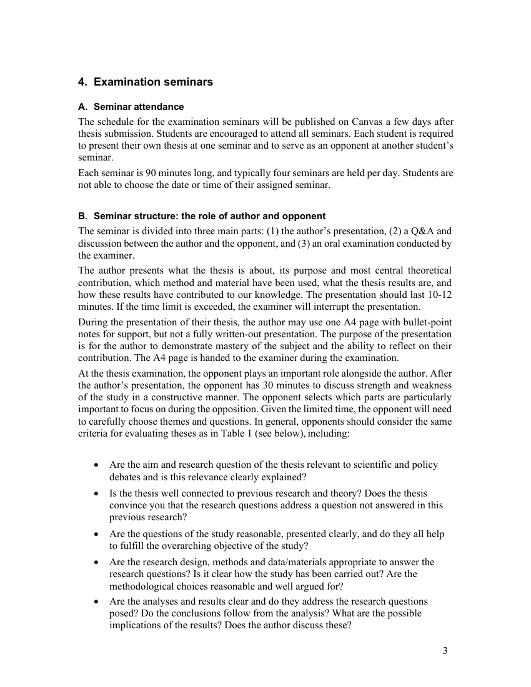
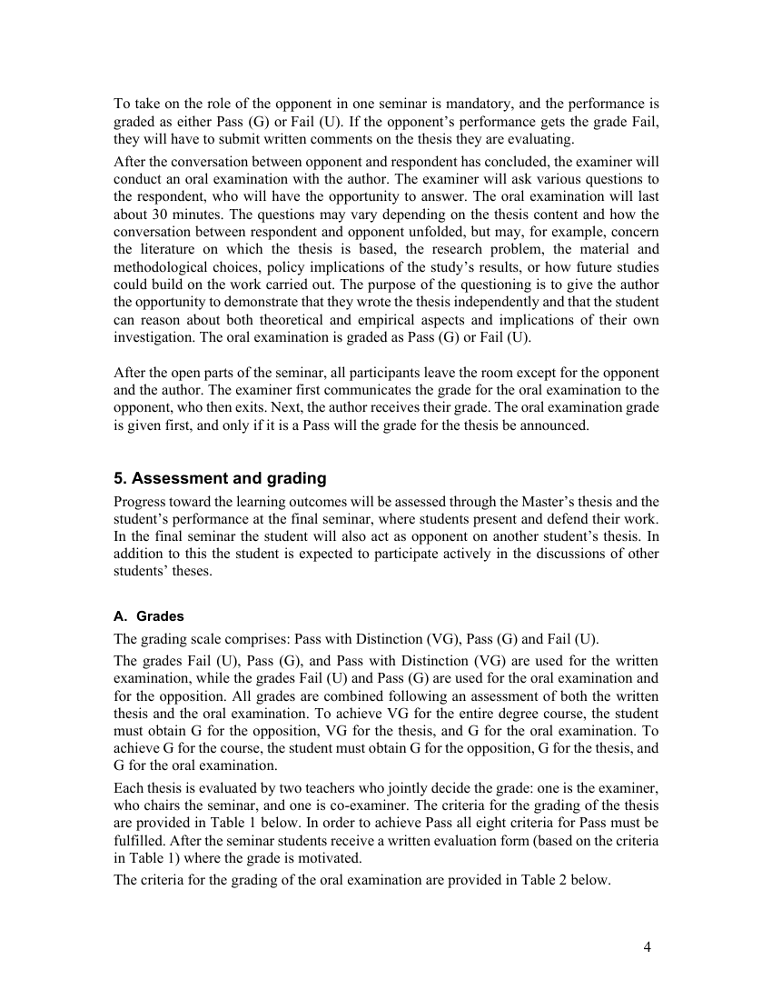
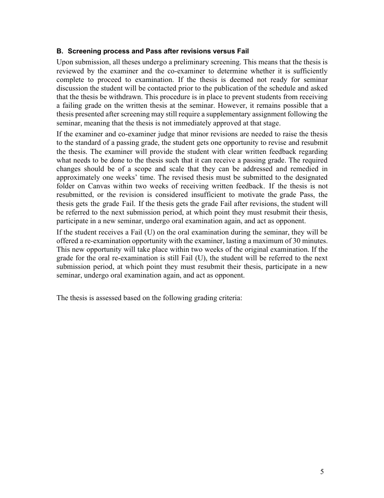

Belägg för examinationsmatrisens markeringar · Källa: kursguide V26
Tabellen nedan styrker examinationsmatrisens markeringar för SK2532 mot kursguide V26. Kursen avslutar Masterprogrammet och examineras genom en skriftlig uppsats, ett examinationsseminarium med författarpresentation, opposition på en annan students uppsats samt en muntlig examination genomförd av examinator.
| Examinationsform (per matris) | Citat ur kursguide V26 | Källa |
|---|---|---|
| Uppsats / research paper | During this course students will learn to write and orally defend an independent, in-depth scientific thesis. During the course, students will learn how to plan, carry out and present scientific research which incorporates all stages of the scientific process: from problem formulation to theory, scientific questions of relevance, method, presentation of results, and conclusions. Each thesis is evaluated by two teachers who jointly decide the grade: one is the examiner, who chairs the seminar, and one is co-examiner. |
Sid 1, 4 — Se sida → |
| Muntlig presentation | The author presents what the thesis is about, its purpose and most central theoretical contribution, which method and material have been used, what the thesis results are, and how these results have contributed to our knowledge. The presentation should last 10-12 minutes. During the presentation of their thesis, the author may use one A4 page with bullet-point notes for support, but not a fully written-out presentation. |
Sid 3 — Se sida → |
| Muntlig tentamen | After the conversation between opponent and respondent has concluded, the examiner will conduct an oral examination with the author. The examiner will ask various questions to the respondent, who will have the opportunity to answer. The oral examination will last about 30 minutes. … The purpose of the questioning is to give the author the opportunity to demonstrate that they wrote the thesis independently and that the student can reason about both theoretical and empirical aspects and implications of their own investigation. The oral examination is graded as Pass (G) or Fail (U). |
Sid 4 — Se sida → |
| Seminariedeltagande | Students will also present and defend their research and conclusions at a mandatory seminar, where they will receive critical and probing questions from both the opponent (another student) and the examiner. Students are encouraged to attend all seminars. Each student is required to present their own thesis at one seminar and to serve as an opponent at another student's seminar. In addition to this the student is expected to participate actively in the discussions of other students' theses. |
Sid 1, 3, 4 — Se sida → |
| Opposition / peer review | At the thesis examination, the opponent plays an important role alongside the author. After the author's presentation, the opponent has 30 minutes to discuss strength and weakness of the study in a constructive manner. The opponent selects which parts are particularly important to focus on during the opposition. … To take on the role of the opponent in one seminar is mandatory, and the performance is graded as either Pass (G) or Fail (U). |
Sid 3–4 — Se sida → |

Sida 3 — Seminar structure: author + opponent
Sida 4 — Oral examination + grading
Sida 5 — Screening + revisions